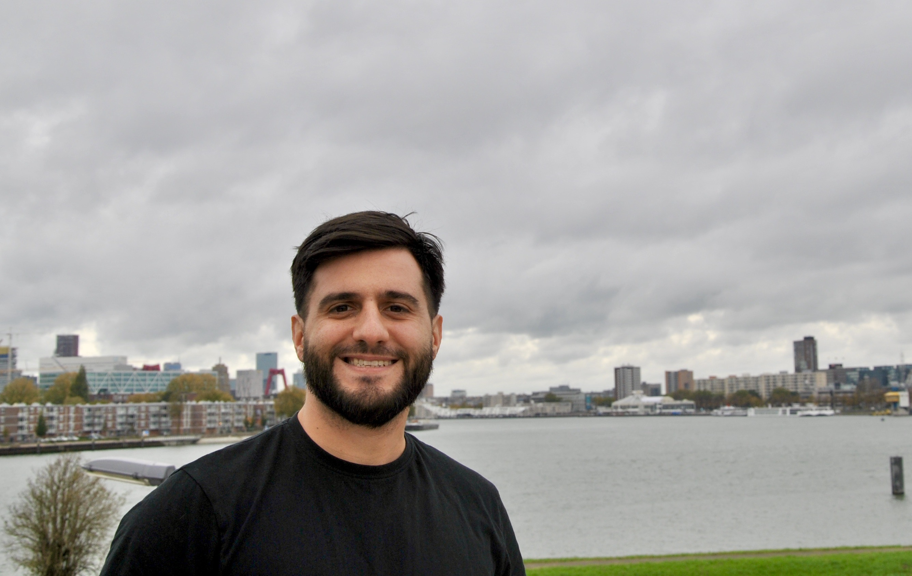
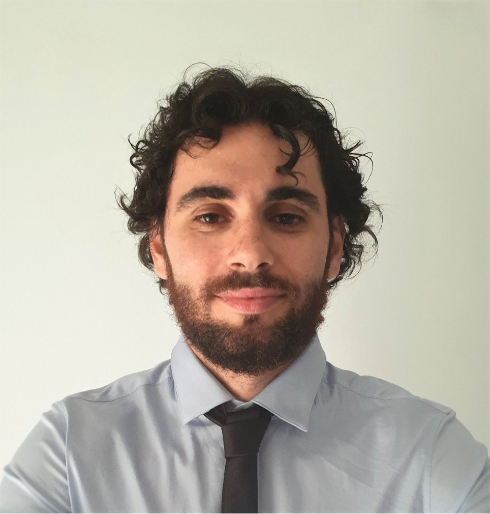

Elections y-SIS 2020 - Candidates
Marta Catalano

I am a PhD candidate in the Department of Decision Sciences at Bocconi University, under the supervision of Prof. Antonio Lijoi and Prof. Igor Prünster. Before moving to Milan, I graduated in Mathematics at University of Rome La Sapienza and obtained a postgraduate master in Big Data Analytics & Social Mining at University of Pisa. I am currently involved in the Bayes Lab at the Bocconi Institute for Data Science and Analytics (BIDSA), where I coordinate a biweekly internal seminar series that brings together PhD students and faculty members. Moreover, I am member of the “de Castro” Statistics Initiative at Collegio Carlo Alberto and in the MIDAS Complex Data Modeling Research Network. My research targets Bayesian nonparametric models for complex data structures, with a particular focus on statistical applications of optimal transport and completely random measures.
Carlo Cavicchia
I am Carlo Cavicchia and I am an Assistant Professor at the Econometric Institute, Erasmus University Rotterdam. In February 2020 I obtained my PhD in Statistics at the Department of Statistical Sciences, Sapienza University of Rome. My research is focused on the methodological and computational aspects of data analysis. The best feeling is when I can use my knowledge to solve practical and real problems. I am currently working on latent variable models, unsupervised classification and model-based composite indicators. At present, I am teaching Data Science for Marketing Analytics at master’s level. For more info about me, see my webpage!
Augusto Fasano

I am Augusto Fasano and I am currently a postdoc researcher at the University of Turin, under the supervision of Prof. M. Ruggiero. I am about to obtain my PhD in Statistics (XXXII cycle) from Bocconi University, where I was jointly advised by Profs. D. Durante and I. Prünster. Prior to the PhD experience, I also had the opportunity to work for almost two years in a multicultural environment at the European Central Bank, before coming back to more research-oriented tasks. Broadly speaking, my research interests lie at the intersection between mathematical statistics and machine learning, with a particular focus on Bayesian inference. In particular, I am working on Bayesian modelling and related computational methods, both exact (Monte Carlo, MCMC and sequential Monte Carlo) and approximate (Variational Inference). If you are interested, you can find out more at my personal page!
Andrea Nigri
Andrea Nigri is currently a researcher at the University of Foggia. He completed his doctoral studies in Statistics at Sapienza, University of Rome, focusing on the projection of mortality and the analysis of longevity dynamics. Since 2015 he has been working as a biostatistician and co-author of publications in medical journals, in 2016 he was a research fellow at the Local Health Department of Padua, working on occupational asbestos exposure. He also attended the European Doctoral School of Demography held at CPop (University of Southern Denmark), in cooperation with the Max Planck Institute for Demographic Research. Andrea has been incorporating statistical thinking and Deep Learning methods into solving problems in the field of Demography and Economics, especially in the longevity study and its social and health impacts.